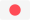

In this page you will get a quick overview about the most used syntax.
To include a table of content of all title in a page use
.. contents:: :local:
The lines have to be as long or longer than the text.
============= Section Title ============= Titles ====== Paragraph --------- Sub-Pragraph ^^^^^^^^^^^^
*emphasis*
emphasis
**strong emphasis**
strong emphasis
`interpreted text`
The rendering and meaning of interpreted text is domain- or application-dependent.
``inline literal``
inline literal
:markup:
> quote markup
`python <http://www.python.org/>`_ `<http://www.python.org/>`_ http://www.python.org/
python
http://www.python.org/
The plugin 'sphinx.ext.extlinks allows creating shortcuts
'sphinx.ext.extlinks
extlinks = {'config_repo': ('https://github.com/tschinz/config/%s', None), 'zawiki_repo': ('https://github.com/tschinz/zawiki/%s', None) }
:config_repo:`jupyter folder <tree/master/config/jupyter>` :config_repo:`shell script <blob/master/scripts/shell/christmas_tree.sh>` :zawiki_repo:`zawiki link <blob/master/source/conf.py>`
jupyter folder shell script conf.py file
Note
To access github files and folders you need to create the following link structure:
https:// + github_repo_link + tree/master/ + folder/location
github_repo_link
tree/master/
folder/location
https:// + github_repo_link + blob/master/ + file/location.txt
blob/master/
file/location.txt
Important
Link to a pdf
https://nbviewer.jupyter.org can be used to display a pdf from github without using the :download directive.
:download
https://nbviewer.jupyter.org/github/tschinz/zawiki/blob/master/pdf/zawiki.pdf :pdfviewer:`github/tschinz/zawiki/blob/master/pdf/zawiki.pdf`
https://nbviewer.jupyter.org/github/tschinz/zawiki/blob/master/pdf/zawiki.pdf
absolute link from root About
relative link from document location About
* absolute link from root :doc:`/about/index` * relative link from document location :doc:`../../about/index`
In order to link to another subheader in another document you need to use Internal References.
In the page to be jumped to add .. _ref_name:, and then you can:
.. _ref_name:
:ref:`ref_name` :ref:`link title<ref_name>`
Like so:
How to use Sphinx Documentation
Sphinx Doc Link
Link to titles directly is done with the extension sphinx.ext.autosectionlabel.
sphinx.ext.autosectionlabel
You need to add the folder_name and subfolder(s)`_name name as well as file_name without .rst extension in order to reference a section title. This avoids the duplicated label warning.
folder_name
subfolder(s)`_name
file_name
.rst
:ref:`Displayname <folder_name/subfolder_name/file_name/section_title>`
:ref:`Back to top <writing/rst/cheatsheet:RST and Sphinx Cheatsheet>` :ref:`writing/rst/cheatsheet:Images`
Back to top
Images
In any place of the document a reference point can be inserted and later refered to.
.. _ref-point: see :ref:`ref-point`
see Internal References
To link to a file within the Sphinx file structure use the Role :download:
:download:
:download:`../../programming/ros/books/Mastering_ROS_for_Robotics_Programming.pdf` :download:`Mastering_ROS_for_Robotics_Programming <../../programming/ros/books/Mastering_ROS_for_Robotics_Programming.pdf>`
../../programming/ros/books/Mastering_ROS_for_Robotics_Programming.pdf
Mastering_ROS_for_Robotics_Programming
.. figure:: /img/logo.*
Images should be either in png or svg format
png
svg
For *.svg files the file ending needs to be changed from svg to *. That way for html svg is used and pdf or pn for the latex or pdf output.
*.svg
*
.. figure:: /img/logo.* :align: left :width: 100px .. figure:: /img/logo.* :align: center :width: 100px .. figure:: /img/logo.* :align: right :width: 100px .. figure:: /img/logo.* :align: center :width: 100px :height: 100px :scale: 50 % :alt: this is the knowhow logo Caption of figure
Caption of figure¶
Images can be displayed side by side with the help of a list table
.. list-table:: * - .. figure:: img/logo.* :align: center :alt: logo 1 :width: 200px Logo Text 1 - .. figure:: img/logo.* :align: center :alt: logo 2 :width: 200px Logo Text 2 - .. figure:: img/logo.* :align: center :alt: logo 3 :width: 200px Logo Text 3
Logo Text 1¶
Logo Text 2¶
Logo Text 3¶
For inline images to work, a substitution needs to be made
.. |folder_icon| image:: /img/icons/folder.* After that the image |folder_icon| can be integrated inline.
After that the image can be integrated inline.
There are some predefined images in conf.py file
|folder| |file| |sign-check| |upload| |download| |expand| |minimize| |arrow-up| |arrow-down| |arrow-left| |arrow-right| |star5| |star4| |star3| |star2| |star1| |star| |en| |ch| |de| |china| |uk| |usa| |it| |jp| |fr| |linux| |mac| |win| |word| |excel| |onenote| |outlook|

* item 1 * item 1.1 * item 1.2 * item 2 * item 2.1 * item 2.1.1 #. auto enumerated list item 1 #. auto enumerated list item 1 #. auto enumerated list item 1 #. auto enumerated list item 1 3. enumerated list start with item 3 #. auto enumerated list item 4 #. auto enumerated list item 5 #. auto enumerated list item 6
item 1
item 1.1
item 1.2
item 2
item 2.1
item 2.1.1
auto enumerated list item 1
enumerated list start with item 3
auto enumerated list item 4
auto enumerated list item 5
auto enumerated list item 6
+------------+------------+-----------+ | Header 1 | Header 2 | Header 3 | +============+============+===========+ | body row 1 | column 2 | column 3 | +------------+------------+-----------+ | body row 2 | Cells may span columns.| +------------+------------+-----------+ | body row 3 | Cells may | - Cells | +------------+ span rows. | - contain | | body row 4 | | - blocks. | +------------+------------+-----------+
Header 1
Header 2
Header 3
body row 1
column 2
column 3
body row 2
Cells may span columns.
body row 3
Cells may span rows.
Cells
contain
blocks.
body row 4
===== ===== ====== Inputs Output ------------ ------ A B A or B ===== ===== ====== False False False True False True False True True True True True ===== ===== ======
Inputs
Output
A
B
A or B
False
True
:widths: auto will adapt the columnwidth automatically
:widths: auto
.. list-table:: :header-rows: 1 :stub-columns: 1 :widths: 1 1 2 :align: center * - Type - Literal - Description * - Boolean - true, false - * - Int - 3, 0x32 - 32 bits integer * - Float - 3.14f - 32 bits floating point * - Double - 3.14 - 64 bits floating point * - String - "Hello world" - UTF-16 string
Type
Literal
Description
Boolean
true, false
Int
3, 0x32
32 bits integer
Float
3.14f
32 bits floating point
Double
3.14
64 bits floating point
String
“Hello world”
UTF-16 string
.. table:: Table caption ===== ===== ====== Inputs Output ------------ ------ A B A or B ===== ===== ====== False False False ===== ===== ======
see also: https://build-me-the-docs-please.readthedocs.io/en/latest/Using_Sphinx/ShowingCodeExamplesInSphinx.html and https://pygments.org/languages/
For all available lexer see: Pygment Lexer
.. code-block:: python import antigravity def main(): antigravity.fly() if __name__=='__main__': main()
import antigravity def main(): antigravity.fly() if __name__=='__main__': main()
.. code-block:: python :linenos: :caption: Code Blocks can have captions. import antigravity def main(): antigravity.fly() if __name__=='__main__': main()
1 2 3 4 5 6
.. code-block:: python :linenos: :lineno-start: 10 import antigravity def main(): antigravity.fly() if __name__=='__main__': main()
10 11 12 13 14 15
.. note:: This is a Note Box
This is a Note Box
.. warning:: This is a Warning Box
Warning
This is a Warning Box
.. important:: This is a Important Box
This is a Important Box
.. seealso:: This is a See Also Box
See also
This is a See Also Box
.. versionadded:: 2.5 The *spam* parameter. .. versionchanged:: 2.5 Feature description .. deprecated:: 3.1 Use :func:`spam` instead.
New in version 2.5: The spam parameter.
Changed in version 2.5: Feature description
Deprecated since version 3.1: Use spam() instead.
spam()
Inline math :math:`a^2 + b^2 = c^2`.
Inline math \(a^2 + b^2 = c^2\).
.. math:: f(x) &= x^2\\ g(x) &= \frac{1}{x}\\ F(x) &= \int^a_b \frac{1}{3}x^3
In order to exclude some parts for a certain output use the .. only:: output directive.
.. only:: output
.. only:: html .. only:: draft .. only:: latex .. only:: html or draft or latex .. only:: html and draft
This is needed for the all the Wavedrom code
If the extension sphinx.ext.todo is enabled and the variable todo_include_todos is set to True in conf.py, one can use the directive todo to write a todo task for a later completion.
sphinx.ext.todo
todo_include_todos
conf.py
todo
.. todo:: (example) This section need to be completed.
Then use the directive todolist to list all todos within the documentation:
todolist
.. todolist::
Get more samples herer: https://graphviz.gitlab.io/gallery/
.. graphviz:: digraph foo { "bar" -> "baz"; }
.. graphviz:: digraph finite_state_machine { rankdir=LR; size="8,5" node [shape = doublecircle]; LR_0 LR_3 LR_4 LR_8; node [shape = circle]; LR_0 -> LR_2 [ label = "SS(B)" ]; LR_0 -> LR_1 [ label = "SS(S)" ]; LR_1 -> LR_3 [ label = "S($end)" ]; LR_2 -> LR_6 [ label = "SS(b)" ]; LR_2 -> LR_5 [ label = "SS(a)" ]; LR_2 -> LR_4 [ label = "S(A)" ]; LR_5 -> LR_7 [ label = "S(b)" ]; LR_5 -> LR_5 [ label = "S(a)" ]; LR_6 -> LR_6 [ label = "S(b)" ]; LR_6 -> LR_5 [ label = "S(a)" ]; LR_7 -> LR_8 [ label = "S(b)" ]; LR_7 -> LR_5 [ label = "S(a)" ]; LR_8 -> LR_6 [ label = "S(b)" ]; LR_8 -> LR_5 [ label = "S(a)" ]; }
For more information see:
Wavedrom JSON Wiki
Wavedrom Tutorial
This documentation makes use of the sphinxcontrib-wavedrom plugin, So you can specify a timing diagram, or a register description with the WaveJSON syntax like so:
sphinxcontrib-wavedrom
WaveJSON
.. wavedrom:: { "signal": [ { "name": "pclk", "wave": 'p.......' }, { "name": "Pclk", "wave": 'P.......' }, { "name": "nclk", "wave": 'n.......' }, { "name": "Nclk", "wave": 'N.......' }, {}, { "name": 'clk0', "wave": 'phnlPHNL' }, { "name": 'clk1', "wave": 'xhlhLHl.' }, { "name": 'clk2', "wave": 'hpHplnLn' }, { "name": 'clk3', "wave": 'nhNhplPl' }, { "name": 'clk4', "wave": 'xlh.L.Hx' }, ]}
and you get:
if you want the Wavedrom diagram to be present in the pdf export, you need to use the “non relaxed” JSON dialect. long story short, no javascript code and use " arround key value (Eg. "name").
"
"name"
you can describe register mapping with the same syntax:
{"reg":[ {"bits": 8, "name": "things"}, {"bits": 2, "name": "stuff" }, {"bits": 6}, ], "config": { "bits":16,"lanes":1 } }
This documentation makes use of the sphinxcontrib.plantuml plugin, for more information see the sphinxcontrib.plantuml plugin and the PlantUML Webpage. For a small Cheatsheet for PlantUML see https://ogom.github.io/draw_uml/plantuml/
sphinxcontrib.plantuml
.. uml:: class Foo1 { You can use several lines .. as you want and group == things together. __ You can have as many groups as you want -- End of class } class User { .. Simple Getter .. + getName() + getAddress() .. Some setter .. + setName() __ private data __ int age -- encrypted -- String password }
.. uml:: Alice -> Bob: Authentication Request Bob --> Alice: Authentication Response Alice -> Bob: Another authentication Request Alice <-- Bob: Another authentication Response
.. uml:: actor actor agent agent artifact artifact boundary boundary card card cloud cloud component component control control database database entity entity file file folder folder frame frame interface interface node node package package queue queue stack stack rectangle rectangle storage storage usecase usecase